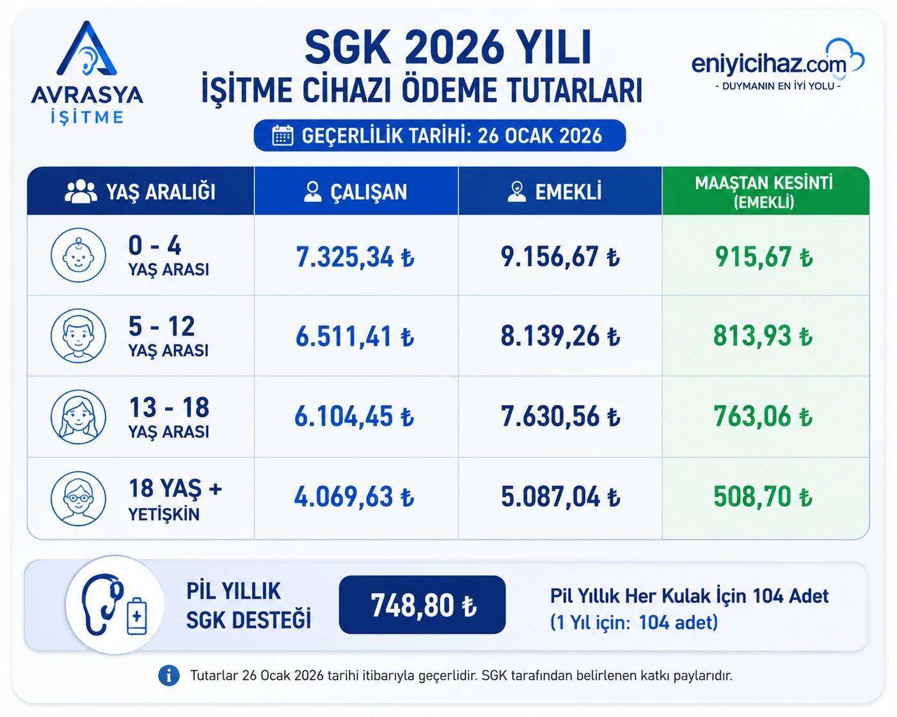

2026 yılı SGK işitme cihazı ödemesi, katkı payları, pil desteği ve güncel ödeme tutarları hakkında detaylı bilgi alın. Çocuklar, çalışanlar ve emekliler için SGK tarafından karşılanan işitme cihazı destek miktarlarını inceleyebilirsiniz.

Kulak Burun Boğaz uzmanından işitme kaybını gösteren sağlık kurulu raporu alınır.
Uzman doktor tarafından işitme cihazı kullanımına yönelik reçete düzenlenir.
Gerekli evraklar hazırlanarak SGK desteği için başvuru süreci tamamlanır.
İşitme cihazı uygulaması yapılır ve kişiye özel ayarları tamamlanır.
SGK belirli şartları sağlayan bireyler için işitme cihazı desteği sunmaktadır. İşitme kaybı yaşayan bireyler gerekli rapor ve reçete işlemlerini tamamladıktan sonra SGK katkısından yararlanabilir.
Avrasya İşitme olarak SGK anlaşmalı hizmet sunuyor, süreç boyunca danışanlarımıza evrak hazırlığı, cihaz seçimi ve uygulama aşamalarında destek veriyoruz.
26 Ocak 2026 itibarıyla geçerli SGK işitme cihazı ödeme tutarları ve pil katkı payları aşağıdaki tabloda yer almaktadır. 2026 yılında SGK tarafından karşılanan işitme cihazı ödeme miktarları yaş grubuna, sigortalılık durumuna ve cihaz tipine göre değişiklik gösterebilmektedir. Çalışanlar, emekliler ve çocuklar için güncel ödeme tutarlarını inceleyebilirsiniz.

SGK işitme cihazı desteğinden yararlanabilmek için işitme kaybını gösteren sağlık kurulu raporu ve uzman doktor reçetesi bulunmalıdır. Çalışanlar, emekliler ve çocuklar belirlenen şartları sağlamaları halinde SGK katkısından yararlanabilmektedir.
Destek miktarları yaş gruplarına göre değişiklik göstermektedir. Özellikle çocuklarda SGK katkı payları daha yüksek olup işitme rehabilitasyonunun erken yaşta desteklenmesi amaçlanmaktadır.
Aktif sigortalı çalışanlar gerekli rapor ve reçete ile SGK desteğinden yararlanabilir.
Emekli vatandaşlar SGK katkı paylarından yararlanabilir ve daha yüksek ödeme alabilir.
Çocuklarda SGK ödeme tutarları daha yüksektir ve özel destekler bulunmaktadır.
Sağlık kurulu raporu bulunan kişiler işitme cihazı desteğine başvurabilir.
SGK işitme cihazı desteği yaş grubuna ve sigorta durumuna göre değişmektedir. Çalışan ve emekli bireyler için farklı ödeme tutarları uygulanmaktadır. 2026 yılı itibarıyla güncel SGK katkı payları yukarıdaki tabloda yer almaktadır.
İşitme cihazı desteğinden yararlanabilmek için uzman doktor tarafından düzenlenmiş reçete ve işitme kaybını gösteren sağlık kurulu raporu gereklidir. Avrasya İşitme olarak süreç boyunca danışanlarımıza destek vermekteyiz.
İşitme kaybınız için SGK desteği alıp alamayacağınızı öğrenmek, gerekli evraklar hakkında bilgi almak ve size uygun cihazları incelemek için bizimle iletişime geçin.
SGK işitme cihazı desteğinden yararlanabilmek için aşağıdaki belgelerin hazırlanması gerekmektedir.
İşitme kaybını gösteren geçerli sağlık kurulu raporu.
KBB uzmanı tarafından düzenlenmiş işitme cihazı reçetesi.
T.C. kimlik kartı veya nüfus cüzdanı.
İşitme testi ve odyolojik değerlendirme sonuçları.
SGK işitme cihazı desteğinden yararlanabilmek için öncelikle Kulak Burun Boğaz uzmanına başvurulmalı ve işitme kaybını gösteren sağlık kurulu raporu alınmalıdır.
Uzman doktor tarafından işitme cihazı reçetesi düzenlendikten sonra gerekli evraklarla birlikte SGK işlemleri tamamlanır.
Avrasya İşitme olarak başvuru sürecinde danışanlarımıza evrak kontrolü, cihaz seçimi ve uygulama desteği sunuyoruz.
SGK işitme cihazı ödemesinden yararlanabilmek için öncelikle işitme kaybını gösteren sağlık kurulu raporu ve uzman doktor tarafından düzenlenmiş işitme cihazı reçetesi alınmalıdır. Ayrıca güncel odyometri testi sonuçlarının da bulunması gerekmektedir.
Hazırlanan evraklar SGK ile anlaşmalı işitme cihazı uygulama merkezine teslim edilir. SGK tarafından karşılanan ödeme tutarı cihaz bedelinden düşülerek işlem tamamlanır. Böylece vatandaşlar devlet katkısından yararlanarak işitme cihazı sahibi olabilir.
2026 yılı SGK işitme cihazı ödeme tutarları yaş grubuna ve sigortalılık durumuna göre değişiklik göstermektedir. Güncel ödeme miktarları bu sayfadaki tabloda yer almaktadır.
SGK desteği kişinin yaşına, cihaz tipine ve güncel mevzuata göre değişmektedir. Güncel destek miktarı için merkezimizden bilgi alabilirsiniz.
İşitme kaybını gösteren sağlık kurulu raporu ve uzman doktor reçetesi bulunan kişiler SGK desteğinden yararlanabilir.
Evet. SGK desteğinden yararlanabilmek için geçerli sağlık kurulu raporu gereklidir.
Destek süreleri yaş grubuna ve güncel SGK kurallarına göre değişiklik gösterebilir.
SGK işitme cihazı katkı payı güncel uygulamada belirli sürelerle yenilenmektedir. Genel olarak işitme cihazı ödemeleri 5 yılda bir yeniden alınabilmektedir.
Uygun sağlık kurulu raporu ve doktor reçetesi bulunması halinde SGK her iki kulak için de ödeme desteği sağlayabilmektedir. Ödeme miktarı güncel mevzuata göre belirlenmektedir.
SGK işitme cihazı katkı payı; Oticon, Phonak, Signia, Widex, ReSound ve NuEar gibi dünyanın önde gelen işitme cihazı markalarında kullanılabilmektedir.
İşitme kaybının derecesi, yaşam tarzı, kullanım beklentisi ve bütçe gibi faktörler değerlendirilerek kişiye en uygun marka ve model belirlenmektedir.
Avrasya İşitme olarak SGK destekli işitme cihazı seçenekleri konusunda danışanlarımıza yardımcı oluyor, ihtiyaçlarına en uygun çözümü sunuyoruz.
SGK süreçlerinde danışanlarımıza destek veriyor, evrak işlemlerini kolaylaştırıyoruz.
İşitme seviyenizi uzmanlarımız tarafından değerlendiriyor ve size uygun çözümleri sunuyoruz.
Cihaz seçimi, uygulama ve kullanım sürecinde profesyonel destek sağlıyoruz.
Bakım, ayar ve teknik destek hizmetleriyle cihazınızı uzun yıllar verimli kullanabilirsiniz.